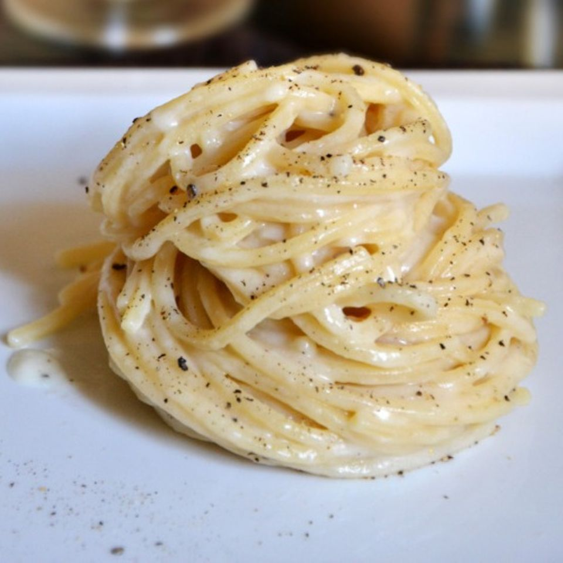

It can not become more easy!
Only four Ingredients. So make sure you get good quality
EFeast like the ancient roman shepherds in the romanian hills.
Ingredients
- one pack of quality pasta (tonnarelli if you can find them)
- some high quality Pecorino Romano
- fresh graded pepper
Instructions
- Boil some water, just enough, and season to taste with salt.
- Add your pasta to the boiling water.
- Grate the cheese and place it in a bowl. Wood or plastic works best.
- As soon as the pasta is al dente toss it in the cheese and immediately stir like crazy.
- If needed add a little bit of pasta water.
- Add the pepper and keep stirring.
- Place on a plate and garnish with Pecorino and pepper.
Return to top
Return to main page